一座浮在海上的樂園，每座島都是一個遊戲
家裡的孩子升上小五，最怕的就是背社會、背單字。與其逼著背，不如先讓他們覺得「這個好像有點有趣」。所以把科目做成樂園裡的島，孩子用一個帳號就能玩全部。
社會怕背？
用遊戲來理解
孩子跳進每個時代，自己動手解決當時人們遇到的難題。先懂「為什麼會這樣」，年代和名詞自然比較記得住。
穿越吧！島嶼開拓者・小五社會背單字無趣？
融合遊戲記憶單字
蓋塔、打怪、打魔王，每一下都要認出、聽出或拼出英文單字。同一個字在不同關卡反覆遇到，不知不覺就記起來。
守護異世界・2000 單字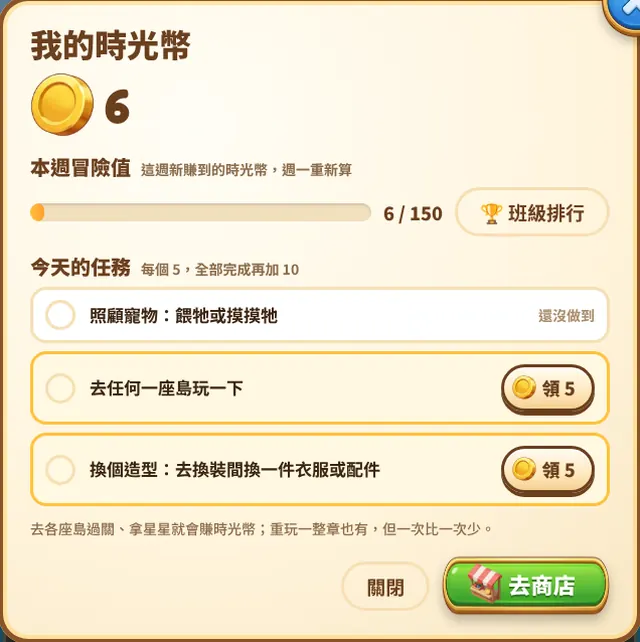
每天三個小任務
像「去今天指定的島玩一下」「照顧寵物」這種小目標，做完領時光幣。份量刻意很小，五分鐘就能完成，讓孩子養成「每天來一下」的習慣，而不是一次玩很久。
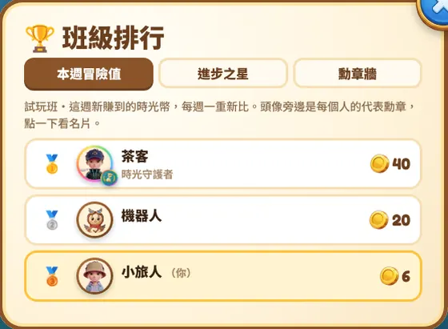
時光幣、護照和勳章
過關、拿星星就會賺時光幣，可以去商店換衣服、傢俱和寵物點心。每座島也有勳章可以收集，蓋在樂園護照上。時光幣只能玩出來，沒有任何花真錢的地方。
目前開放的是社會（小五）和英文；自然科「科學戰士」還在施工，之後也想做小四的社會和自然。
2000 個單字，變成守城的魔力
範圍是教育部公告的國中小 2000 個基本英文字彙，從國小最常用的 300 字開始，照生活主題分關、由淺到深。
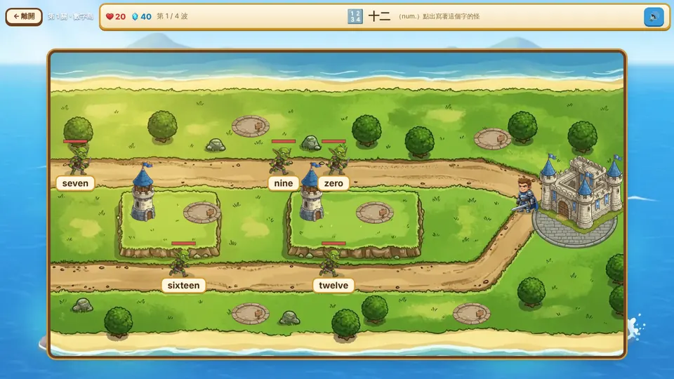
看中文，點出對的英文
怪物身上寫著英文字，上面出中文，點對了箭塔才會發射。也有只聽發音的「聽字」，和一個字母一個字母的「拼字」，不是只有選擇題。
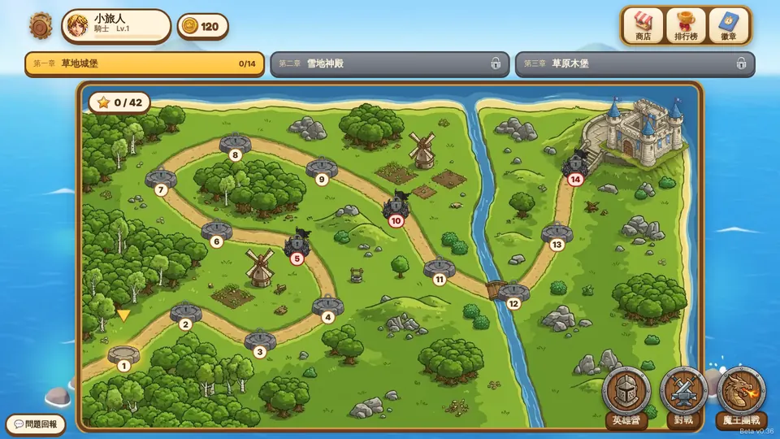
一關一個生活主題
數字、身體、動物、顏色……先從看得見摸得到的字開始，再慢慢到時間、動作、感覺這些抽象的字，難度自然往上爬。
設計理念
希望孩子是「想多答對幾題」，而不是「想辦法刷分」。
- 每一個動作都要答題蓋塔、派兵、打魔王都靠答對。英文不是遊戲旁邊的作業，而是遊戲本身。
- 只有答對才會變強時光幣和經驗只從答對來，花錢買不到，也沒有掛機。
- 同一個字刷不了一直重玩同一個簡單的字，獎勵會越來越少，鼓勵往新的字前進。
- 常錯的字會多出幾次重玩時優先出孩子常答錯的字，不知不覺就在複習弱點。
- 答錯不會被罵答錯只是少打一下，不會扣光、不會被淘汰，孩子敢猜、敢試。
- 可以跟同學一起魔王團戰要大家一起答題才打得倒，也有跟同學的分身對戰。
讓孩子有一個想回來的地方
學習的東西在各座島上；樂園裡另外留了一塊屬於孩子自己的地方。它不考試，只是讓孩子對這個樂園有感情，願意明天再來。
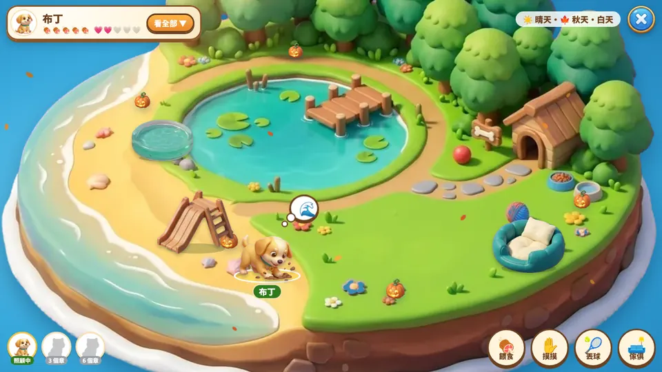
「布丁今天有沒有乖乖等我？」
寵物島：一隻會等你的夥伴
第一次來會拿到一顆時光蛋，孩子自己挑小狗、小貓或黃金鼠，再幫牠取名字。可以餵食、摸摸、丟球，看牠在島上跑來跑去。島上的白天黑夜、季節和天氣會跟著真實時間變。
幾天沒來牠會肚子餓、鬧點小脾氣，但不會生病、也不會死掉，回來摸摸就和好了。我們想要的是「想念」，不是「愧疚」。
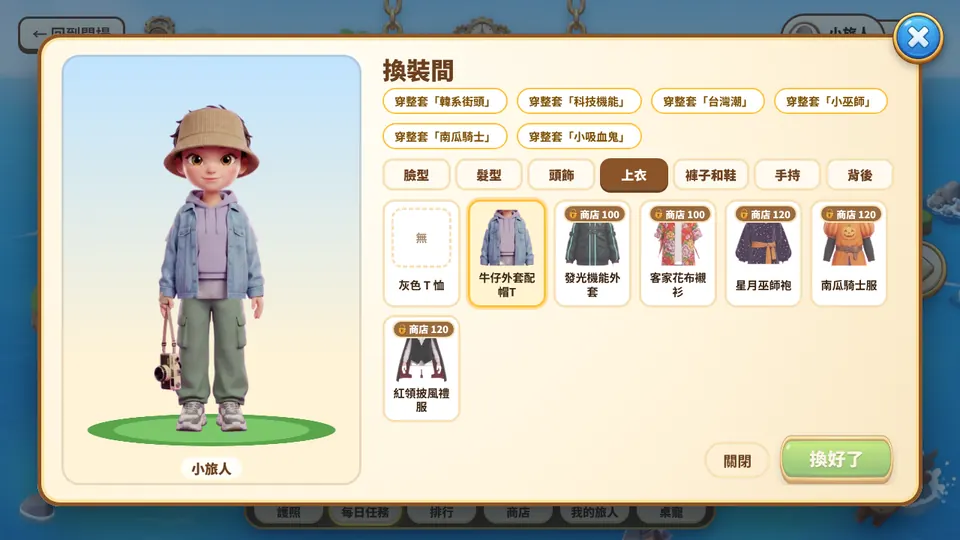
「這是我在樂園裡的樣子！」
時空旅人：我自己的角色
孩子挑臉型、髮型和一套起始衣服，捏出自己的時空旅人。這個角色就是他在樂園裡的頭像，排行榜、名片上看到的都是它，不用放真實照片。
想換新衣服，要靠自己玩出來的時光幣去商店換。穿上自己「賺來」的衣服，比直接送的更有成就感。
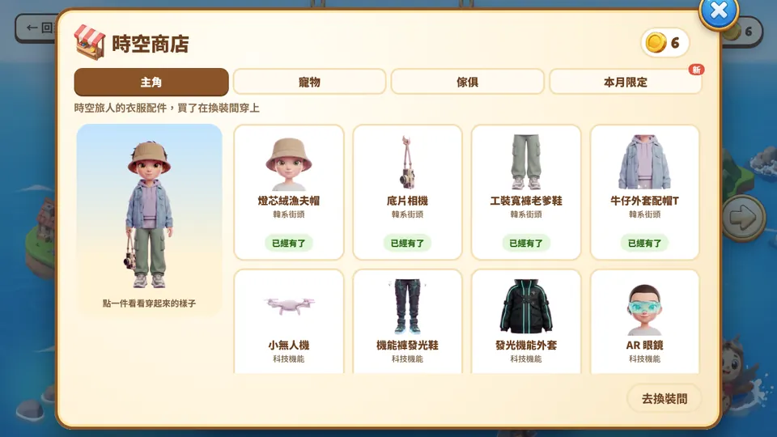
「再存一點，就能買那件發光外套了！」
時空商店：只收時光幣，不收台幣
商店分成主角衣服、寵物點心配件、寵物島傢俱和本月限定。所有東西都只能用遊戲裡玩出來的時光幣換，沒有儲值、沒有抽卡、沒有任何要花真錢的地方，也沒有廣告。存錢買想要的東西，本身也是一個小小的練習。
孩子的個資，一開始就不收
這是給國小孩子玩的，所以能不收的資料就不收，能不開的功能就不開。
- 不用 email、不用真名孩子只要取一個帳號、密碼和暱稱，不填生日、學校或電話。
- 頭像是自己捏的角色沒有上傳照片的地方，別人看到的只有時空旅人和暱稱。
- 暱稱會擋不雅字取暱稱時會自動檢查，不好的字取不了。
- 沒有聊天室遊戲裡沒有可以自由打字聊天的地方，也沒有私訊。
- 不能互送東西時光幣和道具不能轉給別人，避免被要求「送我」或被勒索。
- 只跟同班比排行榜只有同一個班的人看得到，外面的人看不到孩子的名字和成績。
排行榜：不會有人永遠霸榜
排行榜是讓孩子有動力的好工具，但用不好會讓一直排後面的孩子乾脆放棄。所以這樣設計：
- 每週一重新開始比的是「這週新賺的」時光幣，不是存了多少。上週落後，這週一樣有機會。
- 進步之星另外比「這週比上週多了多少」，平常不在前面的孩子，只要比自己進步就能上榜。
- 只列前 10 名、0 分不上榜不會把全班從頭排到尾，沒玩的孩子也不會被列在最後一名。孩子只會另外看到自己的名次。
這是輔助，不是主要的教材
這些遊戲的目的是提升孩子的興趣，讓他們回到課本時會覺得「這個我玩過」，而不是用來取代課本、老師或爸媽的陪伴。
- 遊戲只能帶到一部分重點，課本上的內容還是要讀。
- 英文單字在遊戲裡是「認得、聽得出、拼得出」，句子、文法和口說還是要靠課堂。
- 玩完問孩子一句「今天去了哪個時代？」「學到哪個字？」，效果會比多玩一關好很多。
每次 20 到 30 分鐘就好
短短玩、常常玩，比一次玩很久更記得住，也不會傷眼睛。
- 社會一章大約 20 到 30 分鐘，剛好一次玩完一章；英文一關大約 3 到 5 分鐘，一次玩幾關就好。
- 建議先寫完功課再玩，把它當成讀書後的小獎勵。
- 睡前一小時不要玩，讓眼睛和腦袋休息。
孩子玩到哪，家長看得到
家長可以自己開一個「家庭班」，孩子加入後，在後台就看得到這些：
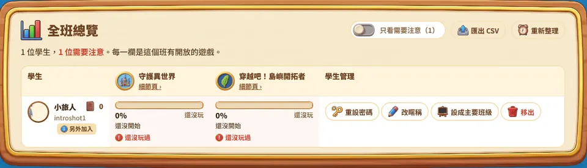
- 每個遊戲玩到哪進度百分比、玩到第幾關或第幾章、最後一次玩是什麼時候。
- 需要注意的提醒很久沒來、最近答對率偏低、密碼試錯被鎖住，都會標出來。
- 英文：最常錯的字點進「細節頁」看得到孩子最常答錯的單字，可以順手一起複習。
- 社會：每章想了什麼每一章的星星、圖鑑收集，還有章節裡思考題的回答和「這一章在教什麼」，適合拿來跟孩子聊。
- 開放哪些遊戲自己決定孩子在樂園裡能進哪幾座島。
- 帳號管理忘記密碼可以直接幫孩子重設，也能改暱稱、匯出紀錄。
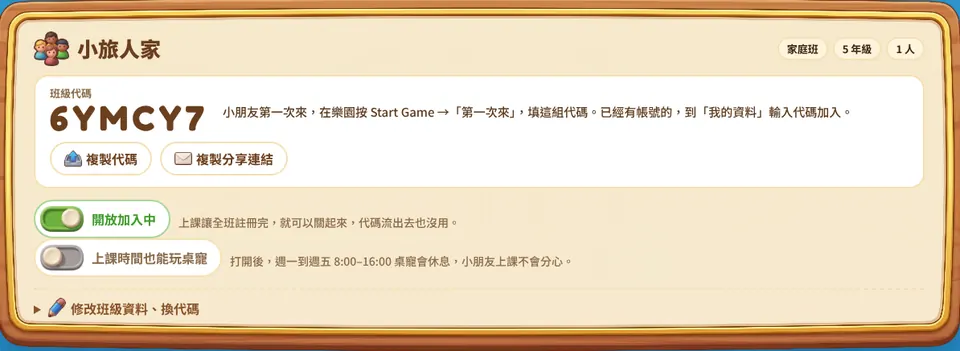
開班方式：在樂園登入畫面按「我是老師／家長」→「第一次使用」，填 email 和密碼就能開班，拿到班級代碼給孩子。孩子已經在試玩班的話，到「我的資料」輸入代碼加入就好，進度都會帶著走。
用試玩班讓孩子玩玩看
不用 email，也不用真實姓名。孩子自己取一個帳號、密碼和暱稱就能開始。
- 網址
- timepark.ciyulab.com
- 班級代碼
- TRYIT
- 按下面的「開始冒險」，代碼會自動填好。
- 幫孩子取帳號（英文或數字）、密碼（6 個字以上）和暱稱。
- 捏一個自己的時空旅人，就可以出發了。
帳號密碼請幫孩子記下來・已經有帳號了？直接登入
還想知道的
要花錢嗎？
不用，完全免費，沒有付費項目也沒有廣告。遊戲裡的時光幣只能靠玩出來，買不到。
適合幾年級？
社會目前是照小五的內容做的；英文從國小常用字開始，一路到國中範圍，三到六年級都可以玩，程度好的孩子可以往後挑戰。
在哪裡玩？要安裝嗎？
手機、平板、電腦的瀏覽器都可以，不用安裝 App。畫面比較大的平板或電腦玩起來最舒服。
試玩班會跟陌生人互動嗎？
試玩班的排行榜是所有試玩的孩子一起比，只看得到暱稱和自己捏的角色；遊戲裡沒有聊天，也不能互送東西。暱稱不要用真實姓名就好。想完全只看自己孩子的話，可以開一個家庭班。
忘記密碼怎麼辦？
請開班的老師或家長在後台幫忙重設。在試玩班的話，可以在遊戲左上角的齒輪按「問題回報」告訴我們。
有建議或發現錯誤，要怎麼告訴你們？
遊戲裡左上角的齒輪有「問題回報」，哪裡卡住、哪裡不好玩、內容哪裡不對，或希望之後加什麼，都很歡迎留言。自然科和小四的內容也還在構思，很想聽聽大家的想法。
從史前一路玩到今天的臺灣
目前只做了國小五年級社會（臺灣的歷史與地理）。孩子當見習生，跟著時光鐘塔的滴答穿越各個時代，每一章都是一段劇情加上解謎。
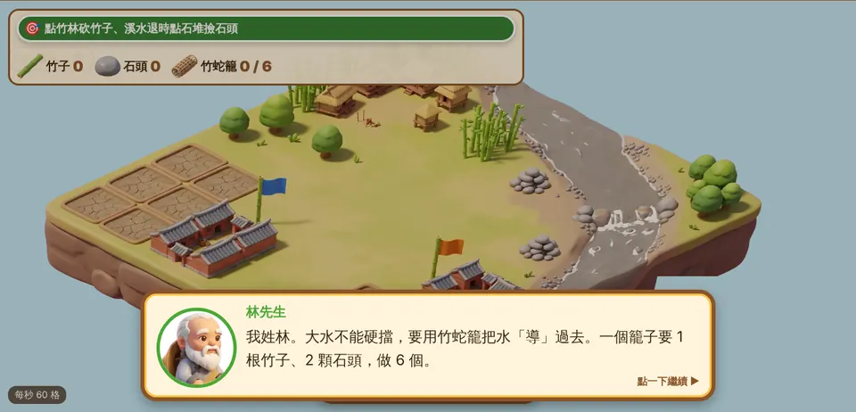
動手做過，才知道為什麼
例如第五章要自己編竹蛇籠、把溪水導進田裡蓋出八堡圳；第一章從打製石器一路做到煉鐵。做完再看課本，「水圳」「磨製石器」就不只是名詞。
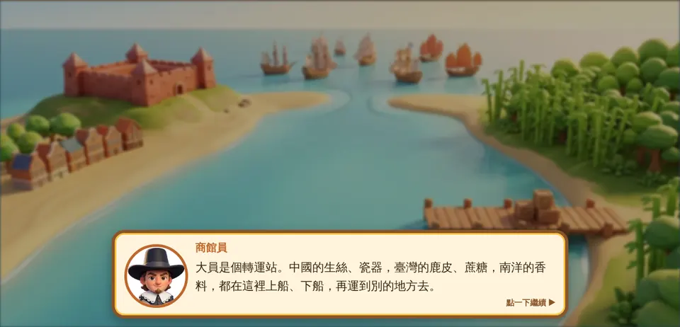
有劇情、有人物、有選擇
每章都有當時的夥伴角色，孩子會遇到要做決定的時候，選擇會影響結局畫面。重點不是背答案，是理解當時的人為什麼這樣做。
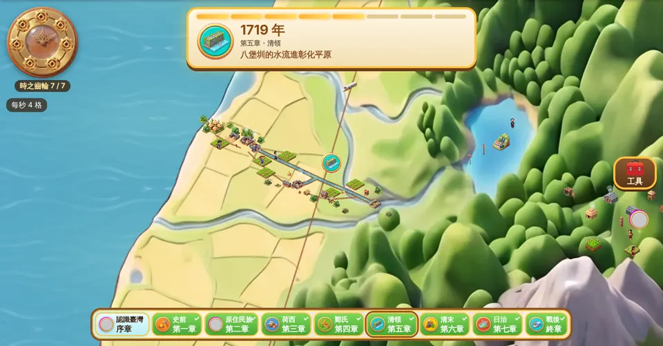
整座島一段一段亮起來
每過一章，大地圖上就會出現那個時代的人物、建築和建設，孩子看得到臺灣是怎麼一步步變成今天的樣子。
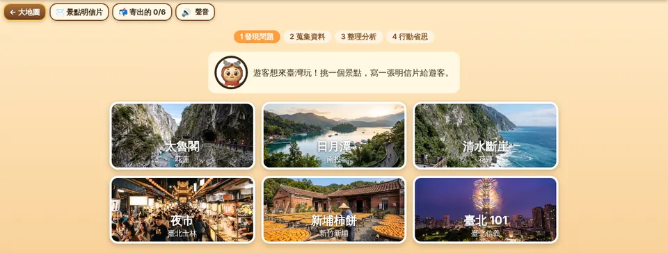
最後回到現在的臺灣
全部破關後，地圖可以切到「現在」，有漁村、規則小鎮、天空港、離島和景點明信片，帶到地理和公民的概念。
像圖中的景點明信片：從太魯閣、日月潭、夜市這些真實照片挑一個，照「發現問題、蒐集資料、整理分析、行動省思」四步走，還能切回過去看這個地方以前的樣子，最後寫一張明信片推薦給遊客。
各家課本的單元順序不太一樣，遊戲照時代排，不一定跟學校進度同步。內容參考課綱與公開資料整理，如果發現哪裡寫得不對，很歡迎告訴我們。